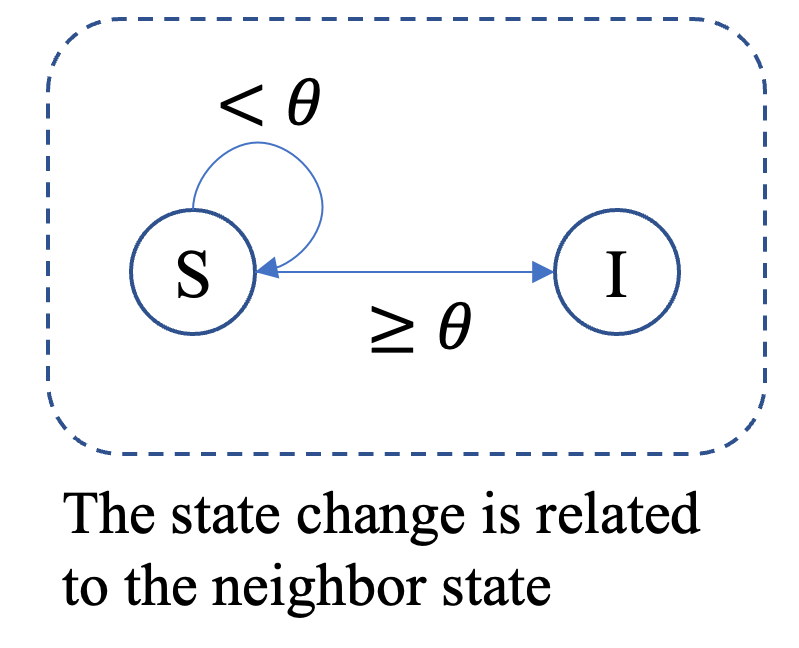

Threshold
The Threshold model describes a diffusion process in which each node in a network adopts a behavior (becomes active) when a sufficient fraction or weighted sum of its neighbors are already active. Unlike the Independent Cascades model, which uses independent stochastic activations, the Threshold model relies on deterministic or probabilistic thresholds that control adoption.
Status
During the simulation, each node can be in one of two states:
Status |
Code |
|---|---|
Inactive |
0 |
Active |
1 |
Parameters
Model Description
At each iteration \(k\), every inactive node \(i\) checks the fraction (or weighted fraction) of its neighbors that are active. If this value exceeds its threshold \(\theta_i\), the node becomes active in the next iteration.
{kind=link}

We use one Boolean indicator vector \(h \in \{0,1\}^N\), where \(h_i=1\) denotes Active, \(h_i=0\) denotes Inactive.
Each active neighbor \(j\) of node \(i\) transmits a contribution
Node \(i\) collects contributions from all neighbors \(N(i)\) to compute its active probability:
The indicator variables are updated by: